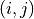

Regionalization with Community Detection
Tutorial
Code to perform spatial regionalization based on the greedy agglomerative algorithm derived in ‘Urban Boundary Delineation from Commuting Data with Bayesian Stochastic Blockmodeling: Scale, Contiguity, and Hierarchy’. Inputs an event dataset of the form [(N, spatial_elist, flow_elist)], where:
N: The number of nodes in the network.
spatial_elist: A list of tuples ((i, j)) encoding the spatial adjacencies of the fundamental spatial units, where a tuple ((i, j)) indicates that unit (i) and unit (j) are spatially adjacent.
flow_elist: A list of tuples ((i, j, w)) encoding the flows between the fundamental spatial units, where a tuple ((i, j, w)) indicates a flow of (w) going from unit (i) to unit (j).
Outputs a regionalization result of the form [(DLs, partitions)], where:
DLs: A list of description length values (in nats) at each iteration of the algorithm.
partitions: A list of partitions at each iteration of the algorithm, where each partition is described by a list containing the node identifiers of the nodes belonging to the partition.
using the following clustering objective:

The code implementation provided here uses an objective function corresponding to the description length of a weighted stochastic block model, as described in the paper ‘Urban Boundary Delineation from Commuting Data with Bayesian Stochastic Blockmodeling: Scale, Contiguity, and Hierarchy’, but can be modified at will.
This method optimizes the Minimum Description Length (MDL) objective for spatial regionalization of community detection.
Input parameters:
greedy_opt takes in the following parameters:
- N
The number of nodes in the network.
- spatial_elist
A list of tuples  encoding the spatial adjacencies of the fundamental spatial units, where a tuple indicates that unit
 and unit
and unit  are spatially adjacent.
are spatially adjacent.- flow_elist
A list of tuples
 encoding the flows between the fundamental spatial units, where a tuple indicates a flow of
encoding the flows between the fundamental spatial units, where a tuple indicates a flow of  going from unit to unit .
going from unit to unit .
The file Baton Rouge, LA.pkl contains a pickled dictionary with the input parameters for the example case of Baton Rouge in Louisiana, as shown in example.ipynb.
Outputs
Once the input parameters are available, the algorithm can be run by calling the function greedy_opt(N, spatial_elist, flow_elist). The outputs of the function are:
- DLs
A list of description length values (in nats) at each iteration of the algorithm.
- partitions
A list of partitions at each iteration of the algorithm, where each partition is described by a list containing the node identifiers of the nodes belonging to the partition.
Notes
The algorithm is set up by default to stop and return when no merge further decreases the description length, but this behavior can be overridden by commenting out/modifying the appropriate sections of the code.
Greedy Regionalization Algorithm
This module contains the code for the greedy regionalization algorithm.
All of the following functions are provided in this module and have the same general usage as described below.
Function |
Description |
|---|---|
Initialize the DefaultDict class. |
|
Get an item from the DefaultDict. |
|
Compute the logarithm of the binomial coefficient. |
|
Compute the logarithm of the multiset coefficient. |
|
Perform fast greedy regionalization for objective functions. |
|
Compute the global contribution to the description length. |
|
Compute the cluster-level contribution to the description length. |
|
Compute the cluster-to-cluster contribution to the description length. |
|
Compute the total description length. |
|
Compute the change in description length after merging clusters. |
|
Merge clusters and update the description length. |
Description: Initialize the DefaultDict class.
Parameters:
- default_factory: The default factory function.
- **kwargs: Additional keyword arguments.
Description: Get an item from the DefaultDict.
Parameters:
- key: The key to get the item for.
- Returns:
value: The value associated with the key.
Description: Compute the logarithm of the binomial coefficient.
Parameters:
- N: Total number of items.
- K: Number of chosen items.
- Returns:
float: Logarithm of the binomial coefficient.
Description: Compute the logarithm of the multiset coefficient.
Parameters:
- N: Total number of items.
- K: Number of chosen items.
- Returns:
float: Logarithm of the multiset coefficient.
Description: Perform fast greedy regionalization for objective functions.
Parameters:
- N: Number of nodes.
- spatial_elist: List of edges (i,j) defined by the spatial adjacency between i and j (no repeats).
- flow_elist: List of weighted edges defined by flows (i,j,w), where flow is from i --> j and has weight w (no repeats).
- Returns:
DLs: List of description length values at each iteration.
partitions: List of partitions at each iteration.
Notes: Make sure nodes are indexed as 0,….,N-1 so as to handle nodes with no flows.
Description: Compute the global contribution to the description length.
Parameters:
- B: Number of clusters.
- Returns:
float: Global contribution to the description length.
Description: Compute the cluster-level contribution to the description length.
Parameters:
- r: Cluster index or tuple of cluster indices.
- Returns:
float: Cluster-level contribution to the description length.
Description: Compute the cluster-to-cluster contribution to the description length.
Parameters:
- r: Cluster index or tuple of cluster indices.
- s: Cluster index or tuple of cluster indices.
- Returns:
float: Cluster-to-cluster contribution to the description length.
Description: Compute the total description length.
- Returns:
float: Total description length.
Description: Compute the change in description length after merging clusters.
Parameters:
- r: Cluster index.
- s: Cluster index.
- Returns:
float: Total change in description length after merging clusters.
Description: Merge clusters and update the description length.
Parameters:
- r: Cluster index.
- s: Cluster index.
- DL: Current description length.
- Returns:
float: Updated description length.
Demo
Step 1: Import necessary libraries and configure LaTeX settings
import pickle
import pandas as pd
import geopandas as gpd
import matplotlib
import matplotlib.pyplot as plt
from ScholarCodeCollective.urban_boundary_delineation_main import greedy_opt
# LaTeX preamble
matplotlib.rcParams.update({'text.usetex': True})
matplotlib.rcParams.update({'text.latex.preamble': r"",
"font.serif": "Times"})
matplotlib.rcParams.update({'font.family':'serif'})
Step 2: Load pickled data for the Baton Rouge CBSA
# Load pickled data for the Baton Rouge CBSA. Data is stored in a dictionary with the following keys:
# 'Name' - Name of the MSA
# 'Class' - Statistical classification of the MSA (one of "CBSA", "CSA", or "state")
# 'N' - Number of nodes in the MSA
# 'Spatial Edgelist' - List of tuples representing the spatial edges in the MSA
# 'Flow Edgelist' - List of tuples representing the flow edges in the MSA
fName = "Baton Rouge, LA.pkl"
with open(fName, "rb") as f:
data = pickle.load(f)
Step 3: Load the geospatial data for plotting
# Load the geospatial data (needed for plotting)
fName = "geo_gdf.pkl"
with open(fName, "rb") as f:
geo_gdf = pickle.load(f)
Step 4: Create a dictionary mapping indices to ‘GEOID10’ values
# Create a dictionary mapping indices to 'GEOID10' values (needed for plotting)
index_to_geoid = {i: geoid for i, geoid in enumerate(geo_gdf["GEOID10"])}
# Unpack the data
name = data["Name"]
N = data["N"]
spatial_elist = data["Spatial Edgelist"]
flow_elist = data["Flow Edgelist"]
Step 5: Run the greedy algorithm and map node indices back to GEOIDs
# Run the greedy algorithm
print(f"Running greedy algorithm on {name}...")
DLs, partitions = greedy_opt(N, spatial_elist, flow_elist)
# Map node indices back to GEOIDs
clusters = []
for partition in partitions[-1]:
fips_set = set()
for node_idx in partition:
fips_set.add(index_to_geoid[node_idx])
clusters.append(fips_set)
Step 6: Map group labels to tracts
# Map group labels to tracts
geo_gdf["group_label"] = pd.Series()
for i, cluster in enumerate(clusters):
geo_gdf.loc[geo_gdf["GEOID10"].isin(cluster), "group_label"] = i
Step 7: Plot the results
# Plot: Colors indicate the inferred partitions, lines demarcate the underlying tract subdivisions
B = len(clusters)
fig, ax = plt.subplots(figsize=(12, 12))
geo_gdf.plot(column="group_label", ax=ax, edgecolor="black", linewidth=0.5, cmap="tab20")
ax.set_title(f"Description Length (nats) = {DLs[-1]:.2f} \n B = {B}", fontsize=20)
plt.suptitle(name, fontsize=24)
plt.axis(False)
plt.show()

Spatial Regionalization Results for Baton Rouge, LA. The x-axis and y-axis represent the geographical coordinates. Different colors indicate different inferred partitions, and the black lines show the underlying tract subdivisions. The title includes the description length in nats and the number of clusters B.
Paper source
If you use this algorithm in your work, please cite:
S. Morel-Balbi and A. Kirkley*, Urban Boundary Delineation from Commuting Data with Bayesian Stochastic Blockmodeling: Scale, Contiguity, and Hierarchy. Preprint arXiv:2405.04911 (2024). Paper: https://arxiv.org/abs/2405.04911